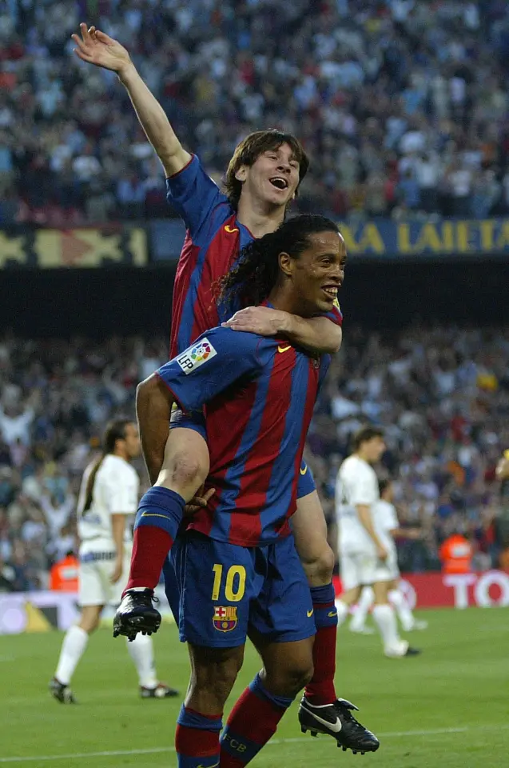
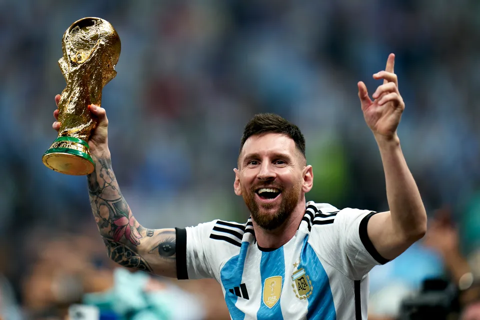
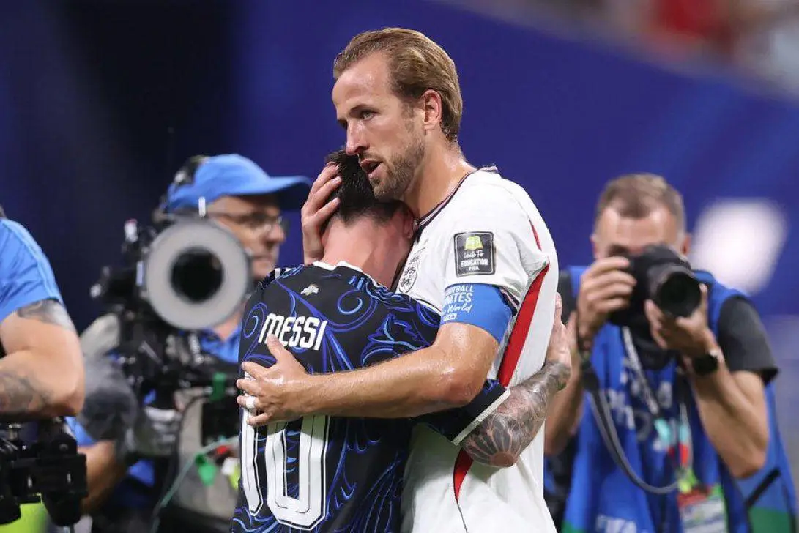
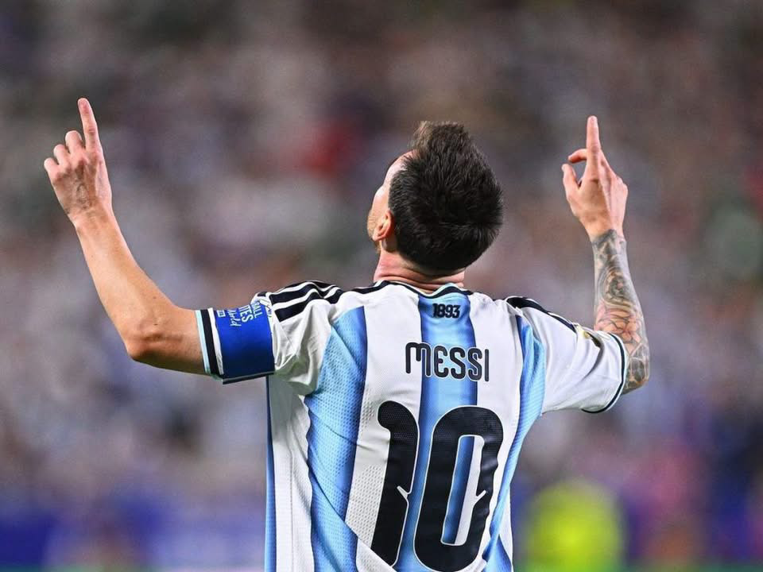

Tribute to Lionel Messi: The Greatest of All Time
Joel Persell
July 23, 2026

What makes Lionel Andrés Messi Cuccittini the greatest footballer of all time? By now, almost everyone agrees that he is the greatest, but why? Could it be his trophies for club and country? Or perhaps his individual awards? It is true, the list of trophies and awards won by Messi and his teammates over the past two decades is enormous. No other player in history can rival his trophy cabinet or his records at the highest level. However, this is not what makes him the greatest of all time. Scoring goals and winning big games is not everything. Even so, his impressive accolades surely count for something, so I will at least give a brief snapshot.
First of all, it goes without saying that 4 Champions League titles is already an impressive feat by itself (think Super Bowl, but bigger); and that’s without even mentioning the other 37 club and 6 international trophies—including the 2022 FIFA World Cup! Moreover, as if his all-time record of 47 trophies is not enough, he has also racked up a whopping 56 prestigious individual awards throughout his career, including 8 Ballons d’Or—3 more than anyone else in history. In fact, Cristiano Ronaldo is the only other player to receive 5, and no one else has even managed to win 4. Meanwhile, Messi won 4 straight Ballons d’Or in a row! That’s 4 consecutive years of top-tier performance and success at the highest possible level.
In terms of stats, it is enough to say that he has maintained a goal per match ratio of roughly 0.8 for over 20 years, scoring over 900 goals, while also contributing over 400 assists. No one else has ever registered as many as 400 assists in their professional career, and only Cristiano Ronaldo has more career goals as of now. Furthermore, he once scored 5 goals in a single match with Barcelona, and he did the same on another occasion with Argentina. He is also the all-time top goal scorer for both Barcelona and Argentina. If you want to see the rest of his stats and records, just look it up—there is too much for me to list out.
Now, as impressive as all of this may be, I will repeat once more, this is not what makes Messi the greatest footballer of all time. So what is it, then, if not his trophies and awards? What is it, if not his stats and records? Well, to some, this may be all that matters; but to me, it is something much more difficult to quantify. It is a rare combination of qualities, some of which are typically absent among many of the greatest athletes.
Lionel Messi is not a boastful hothead; he is not a loud trash-talker; he does not take all the glory for himself when he leads his team to victory. Leo is without question the greatest footballer in history, and arguably the greatest athlete of all time, yet he remains a simple, humble man.
Humility, loyalty, respect—these are the qualities he displays the most. Yet at the same time, he shows determination, confidence, resilience, and other characteristics needed to become a champion. If you know much of anything about his early life and career, you know it was never easy. As a matter of fact, it’s amazing that he was even able to become a professional athlete in the first place, being born with Growth Hormone Deficiency. He is about 5’7” now, but he never would’ve reached this height without expensive medical treatment, courtesy of Barcelona—that’s a whole story of its own.
Also, even when he did make it to the highest level, he didn’t have things handed to him as freely as some of the younger stars like Kylian Mbappé or Lamine Yamal. Nothing against them at all,—they are phenomenal players—but they debuted with the best national teams in the world, whereas Messi started with an Argentine team that was struggling both talent-wise and financially.
To make matters worse, his entire country placed far too much weight on his shoulders, expecting him to generate a World Cup win like it was nothing—and they hated him when he failed. They called him a fraud. They even burned his jerseys in the streets.
Regardless, none of this stopped him from continuing to play for his country, and all the while he kept on winning with his club. True, he did retire from the national team for a few weeks in 2016, but he always loved his country—even when they hated him—and he wanted more than anything to win a World Cup for Argentina. As you well know, the rest is history, and what an amazing story it is. His loyalty finally paid off.

Now to demonstrate his humility and respect, just remember what he did after beating England—the most bitter rival of Argentina. Instead of shouting and gloating in their faces—like some of his teammates did—he slowly walked across the pitch to a defeated and depressed Harry Kane, who was sitting all alone on the bench. What he said to him, no one seems to know for sure, but Harry got up, gave Leo a hug, and for a moment looked much more hopeful and content. That response says it all.

Messi chose to show kindness and respect to his opponent, rather than hatred and contempt. He knew the team they had just beaten was no joke, and he didn’t act like they were. It’s almost like he thought they were better than him, even though he had won and they had lost. In fact, it’s a running joke that Messi has no clue who he is, because he often looks awkward and confused when people are cheering for him.
Of course, all of that is still only describing him on the pitch. Before I move on though, let me insert a quick disclaimer here: I do not know the man personally, which should be obvious enough. Also, I understand that he is not perfect—no one is, except Jesus—and I’ve seen him make mistakes just like anyone else. That being said, I will say what little I do know.
Off the pitch, he is a family man, making time for his wife and three sons whenever he can. Despite being possibly the most famous person on the planet, you likely don’t hear much about him when he isn’t playing in the World Cup. That is intentional. He lives as quiet of a life as he can, sharing hardly any personal details about his family. Practically all that the public knows about his 13 year old son, Thiago, is that he loves football and plays for the U-13 Inter Miami team. There just isn’t much more information to be found, and that’s a good thing.
However, more than anything I have said up to this point, what strikes me the most about Messi is this: he gives the glory to God. He always speaks of his gratitude for what God has given him and done for him, considering the achievements of his career a gift—not a reward due to him. Likewise, if you watch him score, you will notice how he often makes the sign of the cross on his body in honor of Christ, and points both fingers to the sky in honor of his grandmother who encouraged him to play as a boy. Simple words and simple gestures, but incredibly powerful as well.

Although I cannot possibly know what his relationship with God is really like, I praise the Lord that billions of people around the world are reminded of Christ, in however small a way it may be. And that about sums up my knowledge of his personal life, aside from a few extraneous details. That is sort of the point, though. He lives a quiet life—at least for a man as famous as he is.
The last thing I will add—which I think is actually the most powerful proof of his GOAT status—is probably not what you would expect: he ended his World Cup career by losing to Spain in the Final. You might be thinking to yourself, “how is it good that he lost?” One word: legacy. It is no insignificant detail that Spain, of all the teams in the tournament, were the ones to beat Messi in his third and last appearance in the World Cup Final. The young men on that team grew up watching Messi play in the top Spanish league—La Liga—for their entire childhood, leading FC Barcelona to victory time and time again, even against arguably the best club in the world: Real Madrid.
These kids were inspired by the very man they were now facing in the biggest match of their careers. Lamine Yamal, the 19 year old Spanish star, was even bathed by Messi when he was an infant. I know, kind of an odd charity event, but it emphasizes the point I’m making here. The utterly dominant Spanish team we just watched, is a shining example of the legacy of Lionel Andrés Messi. That speaks much louder than one more trophy in a closet full of them from top to bottom. And after all, he is 39 years old. It won’t be long before he has to retire; but his legacy lives on, and not just in Spain.
The shy “little man” from Rosario, Santa Fe, Argentina, means so much more to the football world than mere stats and trophies. He was even an inspiration to me, all the way over in Texas, growing up playing soccer for many years. I talked about him all the time—“Messi this and Messi that”—and apparently that hasn’t changed much. I even had a pair of Messi cleats, which were among my favorite gifts my parents ever gave me. What can I say? If you love the game, you love him, too.
The truth is, Messi’s career was more than just great—it was beautiful. He showed the whole world what it means to play jogo bonito—the beautiful game—and his football magic will never be forgotten. What a pleasure to have seen him play in our lifetime. There will never be another player like Leo. He is one of a kind. Truly, the greatest of all time.
Leave a Comment